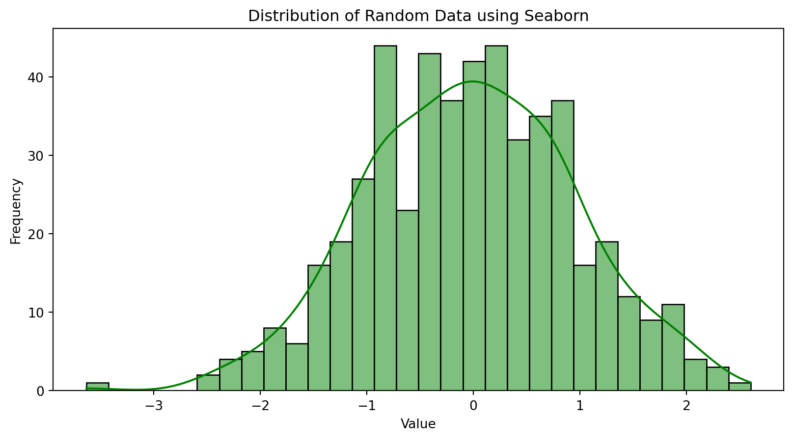

Unit 3: Tools, Processes, and Applications in AI and DS
Introduction
In our discussions so far, we have explored the fundamental ideas behind Artificial Intelligence, the concept of intelligent agents that perceive and act in environments, and the essential statistical tools used to describe data. Now, in this unit, we transition from these foundational concepts to the more tangible aspects of doing AI and DS. We will focus on the practical tools commonly used by professionals, the structured processes that guide data-driven projects, and some initial examples of how these powerful techniques are applied to solve real-world challenges.
Our exploration will begin with an introduction to some basic yet powerful tools, primarily centering on the Python programming language and its rich ecosystem of specialized libraries which have become indispensable in the AI and DS landscape. Following this, we will undertake a guided tour of the DS process pipeline. This pipeline offers a systematic framework for approaching and solving problems using data, taking us from the initial understanding of a problem all the way through to deploying a solution. A critical aspect of working with data is understanding its various representations, as data can come in many forms, each requiring different handling. Equally crucial is the stage of data pre-processing. Raw data, as collected from the real world, is rarely perfect; it often needs to be cleaned, transformed, and prepared before it can be effectively used for analysis or to train intelligent models. Finally, we will touch upon some elementary applications of AI and DS. These examples will provide a glimpse into the practical power of these fields and serve as a bridge to more advanced topics you might encounter in your future studies.
By the conclusion of this unit, you should have a good familiarity with common software tools used in the field, a clear understanding of the typical workflow involved in a DS project, a strong appreciation for why data quality and preparation are foremost important, and a recognition of some basic ways AI and DS are applied to create value.
Basic Tools for AI and DS
While the world of AI and DS is supported by a vast array of software tools and platforms, one programming language, Python, along with its extensive collection of specialized libraries, has emerged as a near-universal standard. Python’s popularity stems from its inherent readability, its versatility across a wide range of tasks, and the robust support provided by its large and active global community. We have already encountered Python in our earlier discussions on statistical calculations, and now we will look more closely at the libraries that make it so powerful for AI and DS.
Python: The language for AI & DS
Python’s design philosophy emphasizes code readability and a syntax that allows programmers to express concepts in fewer lines of code than might be possible in languages like C++ or Java. This makes it relatively easy for beginners to learn and for experienced programmers to quickly prototype and experiment with new ideas, which is particularly valuable in the iterative world of data analysis and model development.
Key Python libraries for AI and DS
Several external libraries significantly extend Python’s native capabilities, transforming it into a highly effective environment for complex data manipulation, numerical computation, machine learning, and visualization.
NumPy (Numerical Python): The foundation for numerical computation
At the heart of much scientific computing in Python lies NumPy. It is the fundamental package for numerical computation, providing robust support for large, multi-dimensional arrays and matrices. Think of a NumPy array as a powerful, grid-like data structure that can hold numbers. Beyond just storing these numbers,NumPy offers a vast collection of high-level mathematical functions designed to operate efficiently on these arrays.
Key features that make NumPy indispensable include its ndarray object, which is an efficient way to store and manipulate numerical data, along with tools for common array operations like selecting specific elements (slicing and indexing), changing the shape of arrays (reshaping), performing linear algebra calculations, conducting Fourier transforms, and generating random numbers. The efficiency of NumPy’s operations is a critical factor when dealing with the large datasets often encountered in AI and DS. Furthermore, many other cornerstone libraries, including Pandas and Scikit-learn, are built directly on top of NumPy and utilize its ndarray as their primary data structure.
Let’s see a simple example:
Code
import numpy as np# We can create a NumPy array from a Python listmy_list = [1, 2, 3, 4, 5]arr = np.array(my_list)print(f"This is our NumPy array: {arr}")# NumPy allows for efficient element-wise operations# For instance, squaring every element in the arrayarr_squared = arr **2print(f"Our array with each element squared: {arr_squared}")# NumPy also handles multi-dimensional arrays, like matricesmatrix = np.array([[10, 20], [30, 40]])print(f"This is a 2D NumPy array (a matrix):\n{matrix}")
This is our NumPy array: [1 2 3 4 5]
Our array with each element squared: [ 1 4 9 16 25]
This is a 2D NumPy array (a matrix):
[[10 20]
[30 40]]
Pandas: Data analysis and manipulation made easy
While NumPy provides the numerical backbone, Pandas offers high-performance, intuitive data structures and a rich set of tools specifically designed for practical data analysis. The two primary data structures in Pandas are the Series and the DataFrame. A Series can be thought of as a single column of data (a 1D labeled array), while a DataFrame is a 2D labeled data structure with columns of potentially different types, much like a spreadsheet, a SQL table, or a dictionary of Series objects.
Pandas excels at tasks such as reading data from and writing data to a multitude of formats (including CSV files, Excel spreadsheets, SQL databases, and JSON). It provides powerful features for aligning data, handling missing values (a very common issue in real-world datasets), merging or joining different datasets together, reshaping data layouts, sophisticated indexing and slicing capabilities for selecting subsets of data, grouping data based on certain criteria to perform aggregate calculations, and specialized functionality for working with time series data. For data scientists and analysts, Pandas significantly simplifies the often complex and tedious processes of data cleaning, transformation, and exploration.
Here’s a glimpse of Pandas in action:
Code
import pandas as pd# Creating a Pandas Series, which is like a labeled 1D arraystudent_scores = pd.Series([85, 92, 78, 95], index=['Alice', 'Bob', 'Charlie', 'David'], name='Exam Scores')print(f"A Pandas Series representing student scores:\n{student_scores}")print(f"Score for Bob: {student_scores['Bob']}")# Creating a Pandas DataFrame, which is like a tablestudent_data = {'StudentName': ['Alice', 'Bob', 'Charlie', 'David'],'Age': [21, 22, 20, 23],'Major': ['CompSci', 'Physics', 'Math', 'CompSci']}students_df = pd.DataFrame(student_data)print(f"\nA Pandas DataFrame with student information:\n{students_df}")# We can easily access a specific column from the DataFrameprint(f"\nJust the 'Major' column from our DataFrame:\n{students_df['Major']}")
A Pandas Series representing student scores:
Alice 85
Bob 92
Charlie 78
David 95
Name: Exam Scores, dtype: int64
Score for Bob: 92
A Pandas DataFrame with student information:
StudentName Age Major
0 Alice 21 CompSci
1 Bob 22 Physics
2 Charlie 20 Math
3 David 23 CompSci
Just the 'Major' column from our DataFrame:
0 CompSci
1 Physics
2 Math
3 CompSci
Name: Major, dtype: object
Matplotlib & Seaborn: Visualizing data
Data visualization is an indispensable part of the DS workflow. It allows us to explore data graphically, uncover patterns, identify outliers, understand relationships between variables, and effectively communicate findings to others. Matplotlib is the foundational plotting library in Python, offering a wide range of capabilities for creating static, animated, and interactive visualizations. It can produce line plots, scatter plots, bar charts, histograms, pie charts, error charts, 3D plots, and much more, with a high degree of customization.
Seaborn is another powerful visualization library that is built on top of Matplotlib. It provides a higher-level interface specifically designed for creating attractive and informative statistical graphics. Seaborn often makes it easier to generate common types of statistical plots like box plots (which we discussed in Unit 2), violin plots, heatmaps, distribution plots (like enhanced histograms), and plots that show relationships along with regression lines. It also comes with more aesthetically pleasing default styles.
Let’s illustrate with a couple of simple plots:
Code
import matplotlib.pyplot as pltimport seaborn as snsimport numpy as np # Re-importing for clarity if this cell is run standalone# Let's generate some sample data for our plots x_values = np.linspace(-np.pi, np.pi, 200) # 200 points from -pi to pi y_sine_values = np.sin(x_values) y_cosine_values = np.cos(x_values) some_random_data = np.random.normal(loc=0, scale=1, size=500) # 500 numbers from a normal distribution# An example using Matplotlib to plot sine and cosine waves plt.figure(figsize=(10, 5)) # Set the figure size plt.plot(x_values, y_sine_values, label='Sine Wave', color='blue') plt.plot(x_values, y_cosine_values, label='Cosine Wave', color='red', linestyle='--') plt.title('Sine and Cosine Waves using Matplotlib') plt.xlabel('X (radians)') plt.ylabel('Y (value)') plt.legend() # Show the legend plt.grid(True) # Add a grid plt.show() # Display the plot# An example using Seaborn to plot a histogram (distribution plot) of random data plt.figure(figsize=(10, 5)) sns.histplot(some_random_data, bins=30, kde=True, color='green') # kde adds a density curve plt.title('Distribution of Random Data using Seaborn') plt.xlabel('Value') plt.ylabel('Frequency') plt.show()

The adage "a picture is worth a thousand words" is particularly true in data analysis, and these libraries are your primary tools for painting those pictures.
Scikit-learn (sklearn): ML toolkit
When it comes to implementing machine learning algorithms, Scikit-learn (often imported as sklearn) is one of the most popular, comprehensive, and user-friendly libraries available in Python. It provides a vast array of simple and efficient tools for various data mining and data analysis tasks.
Scikit-learn’s capabilities cover a wide spectrum of machine learning, including:
Classification: Algorithms for identifying which category an object belongs to (e.g., classifying an email as spam or not spam).
Regression: Algorithms for predicting a continuous-valued attribute associated with an object (e.g., predicting the price of a house).
Clustering: Algorithms for automatically grouping similar objects into sets or clusters when you don’t have pre-defined labels.
Dimensionality Reduction: Techniques for reducing the number of variables under consideration, which can be useful for simplifying models and improving performance.
Model Selection: Tools for comparing, validating, and choosing the best parameters and models for your specific problem.
Preprocessing: A suite of functions for feature extraction, normalization, and other data preparation tasks necessary before feeding data to machine learning models.
What makes Scikit-learn so valuable is its consistent and easy-to-use API (Application Programming Interface). It allows data scientists and machine learning practitioners to implement various algorithms without getting bogged down in the complex mathematical details of each algorithm’s implementation, enabling them to focus more on solving the actual problem. It is built on top of NumPy, SciPy (another scientific computing library), and Matplotlib. While we will delve deeper into specific Scikit-learn functionalities in later parts of this unit and more advanced courses, it is essential to recognize it as a core component of the AI and DS toolkit from the outset.
Here’s a very high-level conceptual example of how one might approach a simple predictive task using Scikit-learn (more detailed explanations will follow):
Code
from sklearn.model_selection import train_test_split # For splitting datafrom sklearn.linear_model import LinearRegression # A simple regression model# from sklearn.metrics import mean_squared_error # For evaluating the modelimport numpy as np # Re-importing# Let's imagine we have some very simple data:# X represents a single feature (e.g., years of experience)# y represents a target variable we want to predict (e.g., salary) X_feature_sample = np.array([1, 2, 3, 4, 5, 6, 7, 8]).reshape(-1, 1) # Needs to be a 2D array for sklearn y_target_sample = np.array([30, 35, 40, 45, 50, 53, 58, 60])# A common practice is to split data into a training set and a testing set# The model learns from the training set and is then evaluated on the unseen testing set X_train, X_test, y_train, y_test = train_test_split(X_feature_sample, y_target_sample, test_size=0.25, random_state=0)# We create an instance of a Linear Regression model simple_linear_model = LinearRegression()# We then "train" or "fit" the model using our training data simple_linear_model.fit(X_train, y_train)# Now we can use the trained model to make predictions on our test data predictions_on_test_data = simple_linear_model.predict(X_test)print(f"A conceptual Linear Regression Example:")print(f" Test features (X_test):\n{X_test}")print(f" Actual target values for test features (y_test): {y_test}")print(f" Predicted target values by the model: {predictions_on_test_data.round(2)}") # Rounded for readability# We could then calculate an error metric like Mean Squared Error:# print(f" Mean Squared Error on test data: {mean_squared_error(y_test, predictions_on_test_data):.2f}")print(f" The model learned a slope (coefficient) of: {simple_linear_model.coef_[0]:.2f}")print(f" The model learned an intercept of: {simple_linear_model.intercept_:.2f}")
A conceptual Linear Regression Example:
Test features (X_test):
[[7]
[3]]
Actual target values for test features (y_test): [58 40]
Predicted target values by the model: [57.1 39.7]
The model learned a slope (coefficient) of: 4.35
The model learned an intercept of: 26.65
This simple demonstration hints at the power Scikit-learn provides for building predictive models.
While these libraries – NumPy, Pandas, Matplotlib, Seaborn, and Scikit-learn – form the foundational toolkit for most general AI and DS tasks, the Python ecosystem is vast. Many other specialized libraries cater to specific advanced areas, such as deep learning (with popular frameworks like TensorFlow, PyTorch, and Keras), more advanced natural language processing (with libraries like NLTK and spaCy), and various other specialized analytical domains. Gaining a solid proficiency with these core libraries is the essential first step on your journey.
Introduction to DS Process Pipeline
Successfully tackling problems using DS is rarely a haphazard endeavor; it typically follows a structured, albeit iterative, workflow known as the DS process pipeline. While specific adaptations and names for stages might vary across organizations or projects, the underlying sequence of activities generally remains consistent. Understanding this pipeline provides a roadmap for transforming raw data into actionable insights or intelligent products.
Figure 1: DS Process Pipeline
Business Understanding or Problem Definition
The journey usually begins with business understanding or problem definition. This crucial first phase involves clearly articulating the problem that needs to be solved or the question that needs an answer, from a business or domain-specific perspective. What are the overarching goals? What specific outcomes are desired? How will the success of the project be measured? Activities during this stage often include discussions with stakeholders to grasp the domain context, translating broad business challenges into well-defined DS questions, and carefully outlining the project’s scope and objectives. Without a lucid understanding of the problem, even the most sophisticated subsequent analytical efforts risk being misdirected and ultimately irrelevant.
Data Acquisition
Once the problem is well understood, the next stage is Data Acquisition, also referred to as data collection. The objective here is to gather all the data necessary to address the defined problem. This involves identifying potential data sources, which could range from internal company databases, external APIs (Application Programming Interfaces) that provide access to third-party data, information scraped from websites, simple flat files like CSVs or text documents, or even data streamed from sensors. After identifying sources, the data must be collected, and its format and structure must be understood. The quality and relevance of the data acquired at this stage will profoundly influence the quality of the insights derived and the performance of any models built later. The old adage “Garbage In, Garbage Out” (GIGO) is particularly pertinent here.
EDA
With data in hand, the focus shifts to data understanding and exploratory data analysis (EDA). The goal of this phase is to develop a deep familiarity with the dataset’s characteristics. This involves examining its quality, identifying potential patterns, understanding relationships between different variables, and generally getting a “feel” for the data. Common activities include calculating descriptive statistics (as we learned in Unit 2, such as mean, median, standard deviation), creating various data visualizations (like histograms to see distributions, scatter plots to examine relationships between two numerical variables, and box plots to compare groups or identify outliers), systematically checking for missing values and their patterns, and spotting any unusual or extreme data points (outliers). EDA is an investigative process that helps in refining initial hypotheses about the data, guiding decisions about which features (variables) might be most important for an analysis, and informing the selection of appropriate modeling techniques for later stages. It is a critical step for uncovering preliminary insights even before any formal modeling begins.
Data Preparation
Following EDA, we enter what is often the most time-consuming and labor-intensive phase of the pipeline: data preparation. This stage, also known by terms like data pre-processing, data munging, or data wrangling, is dedicated to transforming raw, often messy, data into a clean, consistent, and suitable format for effective modeling. High-quality analytical models can only be built upon high-quality data. The specific activities in data preparation are diverse and depend heavily on the nature of the data and the intended analysis. We will delve deeper into these techniques in section 3.4, but they generally include tasks like handling missing data, correcting errors, removing duplicate entries, managing outliers, transforming data scales, and encoding data into numerical formats that algorithms can understand.
Modeling
Once the data is adequately prepared, the modeling stage begins. Here, the objective is to select, build, and train appropriate analytical or machine learning models designed to address the problem defined in the initial phase. This involves choosing algorithms suitable for the task at hand – for example, linear regression for predicting a continuous value, decision trees or logistic regression for classification tasks, or k-means for clustering data into groups. A crucial part of modeling is typically splitting the prepared data into a training set, which is used to “teach” the model, and a testing set, which is kept separate and used later to evaluate how well the model performs on unseen data. The model’s internal parameters are adjusted (or “tuned”) during the training process to best capture the patterns in the training data.
Evaluation
After a model (or several candidate models) has been trained, it must undergo rigorous evaluation. The purpose of this stage is to assess the model’s performance, robustness, and its ability to generalize to new, unseen data, thereby ensuring it meets the project’s objectives. Evaluation involves using appropriate metrics tailored to the type of model and problem. For instance, classification models might be evaluated using accuracy, precision, recall, or F1-score, while regression models might use Mean Squared Error (MSE) or R-squared. A key activity is testing the model on the previously set-aside test data. Techniques like cross-validation are also often employed to get a more reliable estimate of performance. Comparing different models or different versions of the same model (with different settings) is also part of this stage. Proper evaluation is vital to prevent issues like overfitting, where a model learns the training data too well, including its noise, and consequently performs poorly on new data.
Deployment
If a model performs satisfactorily during evaluation, it can proceed to the deployment phase. This is where the validated model is integrated into a production environment or an existing business process so that it can start delivering tangible value. Deployment can take many forms: it might involve creating an API that allows other software systems to send data to the model and receive its predictions, building interactive dashboards that present the model’s insights to business users, or embedding the model directly within an application.
Monitoring and Maintenance
Finally, the DS pipeline doesn’t truly end with deployment. The monitoring and maintenance stage is an ongoing process crucial for the long-term success of any deployed AI or DS solution. The objective here is to continuously monitor the model’s performance in the live environment and to update or retrain it as necessary. Over time, the statistical properties of the data being fed to the model might change (a phenomenon known as “concept drift”), or the underlying relationships the model learned might no longer hold true. Regular monitoring helps detect such degradation in performance, and periodic retraining with fresh data ensures the model remains relevant and effective.
It is essential to recognize that this pipeline is highly iterative. Data scientists frequently move back and forth between these stages. For example, insights gained during Exploratory Data Analysis might reveal significant data quality issues, necessitating a return to the Data Acquisition or Data Preparation stages. Similarly, if model evaluation shows poor performance, it might prompt a re-evaluation of the features used (leading back to Data Preparation or EDA), the choice of model, or even a refinement of the initial problem definition. This iterative nature is a hallmark of practical DS work.
Different Representations of Data
Data, the raw material of AI and DS, manifests in a variety of forms. Understanding these different representations is fundamental to selecting the appropriate methods for storage, processing, analysis, and visualization. Broadly, data can be categorized into structured, unstructured, and semi-structured types.
Structured Data is characterized by its high degree of organization. It adheres to a pre-defined data model or schema, meaning its format and the types of data it can hold are explicitly defined beforehand. The most common representation of structured data is tabular, consisting of rows (representing individual records or observations) and columns (representing specific attributes or features of those records). Each column typically has a well-defined data type, such as integer, string, date, or boolean. This kind of data is commonly found in relational databases (managed by systems like MySQL, PostgreSQL, or Oracle) and spreadsheets (like Microsoft Excel or Google Sheets). The inherent organization of structured data makes it relatively straightforward to query, manage, and analyze using traditional data processing tools, including SQL (Structured Query Language). Examples abound in everyday business operations: customer records stored in a Customer Relationship Management (CRM) system, detailed sales transactions, or employee information managed by an Human Resources (HR) system are all typically structured data. In Python, the Pandas library, with its DataFrame object, provides an exceptionally powerful and convenient way to work with structured, tabular data.
In stark contrast, Unstructured Data lacks a pre-defined data model or an inherent organizational framework. It does not fit neatly into the rows and columns of traditional databases. This category encompasses a vast and rapidly growing amount of information, often in textual or multimedia formats. Examples include the content of text documents such as emails, news articles, books, and social media posts; visual information like images and photographs; audio files such as voice recordings and music; and video files. The absence of a rigid structure makes unstructured data more challenging to process and analyze using conventional methods. Specialized techniques, often drawing from fields like Natural Language Processing (NLP) for text, computer vision for images, and signal processing for audio, are required to extract meaningful features and insights from this type of data. In Python, specific libraries are used to handle different forms of unstructured data: NLTK (Natural Language Toolkit) and spaCy are popular for text processing; Pillow or OpenCV (Open Source Computer Vision Library) are used for image manipulation and analysis; and Librosa is a common choice for working with audio signals. A key step in analyzing unstructured data is often feature extraction – the process of converting the raw unstructured content into a structured format (e.g., numerical vectors) that can then be fed into analytical models.
Bridging the gap between these two extremes is Semi-structured Data. This type of data does not conform to the strict relational structure of traditional databases but possesses some organizational properties, often through the use of tags, markers, or hierarchical arrangements that separate semantic elements. It is essentially a hybrid, exhibiting some degree of structure without being as rigidly defined as fully structured data. A key characteristic of semi-structured data is that it is often self-describing; the tags or markers within the data itself provide information about its structure and meaning. Common examples include JSON (JavaScript Object Notation) files, which are widely used for data interchange on the web due to their human-readable text format and simple key-value pair structure. Another example is XML (eXtensible Markup Language) documents, which use tags to define elements and their attributes, allowing for complex hierarchical data representations. Data stored in many NoSQL databases, such as document databases like MongoDB, also often falls into the semi-structured category. Python offers built-in libraries for handling these formats, such as the json module for working with JSON data and the xml.etree.ElementTree module for parsing XML. Moreover, the versatile Pandas library can often parse JSON and XML data, converting it into its familiar DataFrame structure for easier analysis.
Let’s look at a simple example of how Python handles JSON, a common semi-structured format:
Code
import json# Imagine we have a string containing data in JSON format# This could have come from a file or an API responsejson_data_string ='''{ "bookTitle": "The Art of DS", "authors": [ {"firstName": "Jane", "lastName": "Doe"}, {"firstName": "John", "lastName": "Smith"} ], "publicationYear": 2023, "topics": ["Statistics", "Machine Learning", "Visualization"], "isBestseller": true}'''# We can "load" this JSON string into a Python dictionary# This makes the data easily accessible in our Python programbook_details_dict = json.loads(json_data_string)# Now we can access elements of the data like a regular Python dictionaryprint(f"The title of the book is: {book_details_dict['bookTitle']}")print(f"The first author's last name is: {book_details_dict['authors'][0]['lastName']}")print(f"One of the topics covered is: {book_details_dict['topics'][1]}")print(f"Is it a bestseller? {book_details_dict['isBestseller']}")
The title of the book is: The Art of DS
The first author's last name is: Doe
One of the topics covered is: Machine Learning
Is it a bestseller? True
This example demonstrates how easily Python can parse and interact with semi-structured JSON data, making it accessible for further processing and analysis.
A comprehensive understanding of these different data representations—structured, unstructured, and semi-structured—is essential for any data professional. It guides the selection of appropriate storage solutions, informs the choice of data processing techniques, and dictates the analytical tools that can be effectively employed. Many real-world projects involve a blend of these data types, requiring a versatile skill set to manage and extract value from them all.
Importance of pre-processing the data
The journey from raw data to meaningful insights or effective AI models is rarely straightforward. Data collected from real-world sources – be it from databases, user interactions, sensors, or external feeds – is often far from perfect. It can be messy, riddled with inconsistencies, plagued by missing information, and generally not in a state suitable for direct input into analytical algorithms or machine learning models. This is where data pre-processing plays a pivotal role. It is a critical, and often the most time-consuming, phase in the DS pipeline. Data pre-processing encompasses a collection of techniques used to clean, transform, and organize raw data, with the ultimate goal of improving its quality and making it amenable to the subsequent stages of analysis and modeling. The quality of your input data directly dictates the quality of your output; therefore, neglecting or inadequately performing data pre-processing can lead to inaccurate models, misleading conclusions, and ultimately, a failed project. The well-known adage “Garbage In, Garbage Out” (GIGO) emphatically applies to this stage. The tasks involved in data pre-processing are diverse and depend heavily on the specific dataset and the objectives of the analysis. However, some common categories of pre-processing steps include Data Cleaning, Data Transformation, and Data Reduction.
Data cleaning
Data cleaning focuses on identifying and rectifying errors, inconsistencies, and missing information within the dataset. A very common issue is handling missing values. Often, datasets will have entries where data is absent or was not recorded. How these missing values are dealt with can significantly impact the analysis. Several strategies exist:
One approach is deletion, which involves removing records (rows) that contain missing values, or even entire features (columns) if they have an excessive proportion of missing data and are deemed not critical. Row deletion is generally viable if only a small number of records are affected and the dataset is large enough to absorb the loss.
A more common approach is imputation, which involves filling in the missing values with plausible substitutes. For numerical features, missing values might be replaced with the mean or median of that feature. For categorical features, the mode (the most frequent category) is often used. More sophisticated imputation techniques also exist, such as using regression models or k-Nearest Neighbors to predict the missing values based on other information in the dataset.
Let’s illustrate imputation with Python and Pandas:
Code
import pandas as pdimport numpy as np # For creating np.nan (Not a Number) to represent missing values# Sample DataFrame with some missing valuesraw_data = {'FeatureA': [10, 20, np.nan, 40, 10, 60],'FeatureB': [100, 120, 110, np.nan, 100, 140],'Category': ['Alpha', 'Beta', np.nan, 'Alpha', 'Gamma', 'Beta']}df_with_missing = pd.DataFrame(raw_data)print("Original DataFrame with missing values:")print(df_with_missing)# Strategy 1: Fill missing numerical values with the mean of their respective columnsdf_mean_imputed = df_with_missing.copy() # Work on a copydf_mean_imputed['FeatureA'] = df_mean_imputed['FeatureA'].fillna(df_mean_imputed['FeatureA'].mean())df_mean_imputed['FeatureB'] = df_mean_imputed['FeatureB'].fillna(df_mean_imputed['FeatureB'].mean())print("\nDataFrame after mean imputation for FeatureA and FeatureB:")print(df_mean_imputed)# Strategy 2: Fill missing categorical values with the mode of that columndf_mode_imputed = df_with_missing.copy()mode_category = df_mode_imputed['Category'].mode()[0] # mode() can return multiple if ties, so take the firstdf_mode_imputed['Category'] = df_mode_imputed['Category'].fillna(mode_category)print("\nDataFrame after mode imputation for Category:")print(df_mode_imputed)# Strategy 3: Drop rows that contain any missing valuedf_rows_dropped = df_with_missing.dropna() # Removes rows with any NaNprint("\nDataFrame after dropping rows with any missing values:")print(df_rows_dropped)
Original DataFrame with missing values:
FeatureA FeatureB Category
0 10.0 100.0 Alpha
1 20.0 120.0 Beta
2 NaN 110.0 NaN
3 40.0 NaN Alpha
4 10.0 100.0 Gamma
5 60.0 140.0 Beta
DataFrame after mean imputation for FeatureA and FeatureB:
FeatureA FeatureB Category
0 10.0 100.0 Alpha
1 20.0 120.0 Beta
2 28.0 110.0 NaN
3 40.0 114.0 Alpha
4 10.0 100.0 Gamma
5 60.0 140.0 Beta
DataFrame after mode imputation for Category:
FeatureA FeatureB Category
0 10.0 100.0 Alpha
1 20.0 120.0 Beta
2 NaN 110.0 Alpha
3 40.0 NaN Alpha
4 10.0 100.0 Gamma
5 60.0 140.0 Beta
DataFrame after dropping rows with any missing values:
FeatureA FeatureB Category
0 10.0 100.0 Alpha
1 20.0 120.0 Beta
4 10.0 100.0 Gamma
5 60.0 140.0 Beta
The choice of imputation strategy depends on the nature of the data and the extent of missingness. Another aspect of data cleaning is handling noisy data, which includes addressing errors, correcting meaningless entries, or dealing with outliers. Outliers are data points that deviate significantly from the majority of other observations in the dataset. They can arise from measurement errors, data entry mistakes, or genuinely unusual occurrences. Strategies for dealing with noisy data include manual or programmatic correction of obvious errors (like typos in text fields). For outliers, treatment options include deletion (if they are confirmed errors or clearly unrepresentative), data transformation (e.g., applying a logarithmic transformation to a skewed feature can reduce the influence of high-value outliers), capping or Winsorizing (where extreme values are replaced by the nearest “acceptable” value, such as the 99th percentile), or binning, where numerical values are grouped into discrete intervals, which can help smooth out noise. Finally, data cleaning often involves removing duplicate records to ensure that each observation is unique and to prevent bias in the analysis.
Data transformation
Data transformation involves modifying the data into a more suitable format or scale for analysis and modeling. A common and important transformation is Normalization or Standardization, also known as Feature Scaling. Numerical features in a dataset often have vastly different scales and ranges (for example, a person’s age might range from 0 to 100, while their income might range from tens of thousands to millions). Many machine learning algorithms, particularly those that rely on distance calculations (like k-Nearest Neighbors or Support Vector Machines) or use gradient descent for optimization (like linear regression or neural networks), can perform poorly or converge slowly if features are on drastically different scales. Feature scaling brings all numerical features onto a comparable scale.
Normalization (Min-Max Scaling) rescales the data to a fixed range, typically between 0 and 1. The formula is \[X_{\text{normalized}} = \dfrac{(X - X_{min})}{(X_{max} - X_{min})}\].
Standardization (Z-score Normalization) transforms the data so that it has a mean of 0 and a standard deviation of 1. The formula is : \[X_{\text{standardized}} = \dfrac{(X - mean(X))}{stdev(X)}\]
Let’s see this in Python using Scikit-learn:
Code
from sklearn.preprocessing import MinMaxScaler, StandardScalerimport numpy as np # Re-importing for clarity# Sample data with varying scalesdata_for_scaling = np.array([[1000, 0.5], [2000, 1.0], [3000, 2.5], [4000, 5.0], [10000, 10.0]], dtype=float)df_to_scale = pd.DataFrame(data_for_scaling, columns=['Salary', 'ExperienceYears'])print("Original data for scaling:")print(df_to_scale)min_max_scaler = MinMaxScaler()normalized_array = min_max_scaler.fit_transform(df_to_scale)df_normalized = pd.DataFrame(normalized_array, columns=df_to_scale.columns)print("\nData after Min-Max Normalization (scaled to 0-1):")print(df_normalized)standard_scaler = StandardScaler()standardized_array = standard_scaler.fit_transform(df_to_scale)df_standardized = pd.DataFrame(standardized_array, columns=df_to_scale.columns)print("\nData after Standardization (mean~0, std~1):")print(df_standardized)
Original data for scaling:
Salary ExperienceYears
0 1000.0 0.5
1 2000.0 1.0
2 3000.0 2.5
3 4000.0 5.0
4 10000.0 10.0
Data after Min-Max Normalization (scaled to 0-1):
Salary ExperienceYears
0 0.000000 0.000000
1 0.111111 0.052632
2 0.222222 0.210526
3 0.333333 0.473684
4 1.000000 1.000000
Data after Standardization (mean~0, std~1):
Salary ExperienceYears
0 -0.948683 -0.950255
1 -0.632456 -0.806277
2 -0.316228 -0.374343
3 0.000000 0.345547
4 1.897367 1.785328
Another crucial transformation is Encoding Categorical Data. Most machine learning algorithms are designed to work with numerical input and cannot directly process categorical data (textual labels). Therefore, categorical features must be converted into a numerical representation.
Label Encoding assigns a unique integer to each distinct category (e.g., if categories are ‘Red’, ‘Green’, ‘Blue’, they might become 0, 1, 2 respectively). This is suitable for ordinal categorical data where the numerical order has meaning. However, if applied to nominal data (where categories have no inherent order), algorithms might incorrectly interpret these numbers as having an ordinal relationship (e.g., implying Blue is “greater” than Green).
One-Hot Encoding addresses this issue for nominal data. It creates new binary (0 or 1) columns for each unique category in the original feature. For any given data record, the column corresponding to its category will have a value of 1, and all other newly created columns for that original feature will have a value of 0. This method avoids implying any ordinal relationship but can lead to a significant increase in the number of features (high dimensionality) if the original categorical feature has many unique categories.
Python’s Pandas library provides convenient functions for these encoding tasks:
Code
import pandas as pd # Re-importing for clarity# Sample DataFrame with a categorical featureemployee_data = {'EmployeeID': [1, 2, 3, 4, 5],'Department': ['Sales', 'HR', 'Tech', 'Sales', 'HR']}df_employees = pd.DataFrame(employee_data)print("Original DataFrame with a categorical 'Department' feature:")print(df_employees)# Label Encoding example using Pandas factorize()# factorize returns both the integer labels and the unique categoriesdf_employees['Department_LabelEncoded'], department_categories = pd.factorize(df_employees['Department'])print("\nDataFrame with Label Encoded 'Department':")print(df_employees[['Department', 'Department_LabelEncoded']])print("Unique department categories for label encoding:", department_categories)# One-Hot Encoding example using Pandas get_dummies()df_one_hot_encoded = pd.get_dummies(df_employees['Department'], prefix='Dept')# We can join this back to the original DataFrame if neededdf_employees_final = pd.concat([df_employees.drop(columns=['Department_LabelEncoded']), df_one_hot_encoded], axis=1)print("\nDataFrame after One-Hot Encoding 'Department':")print(df_employees_final)
Original DataFrame with a categorical 'Department' feature:
EmployeeID Department
0 1 Sales
1 2 HR
2 3 Tech
3 4 Sales
4 5 HR
DataFrame with Label Encoded 'Department':
Department Department_LabelEncoded
0 Sales 0
1 HR 1
2 Tech 2
3 Sales 0
4 HR 1
Unique department categories for label encoding: Index(['Sales', 'HR', 'Tech'], dtype='object')
DataFrame after One-Hot Encoding 'Department':
EmployeeID Department Dept_HR Dept_Sales Dept_Tech
0 1 Sales False True False
1 2 HR True False False
2 3 Tech False False True
3 4 Sales False True False
4 5 HR True False False
Other transformations include Binning or Discretization, which involves converting continuous numerical data into a finite number of discrete bins or categories (e.g., grouping ages into “Child,” “Adolescent,” “Adult,” “Senior”). This can sometimes help manage non-linear relationships in the data or reduce the impact of minor variations or noise.
Data reduction
Data reduction techniques aim to reduce the volume or complexity of the data while striving to preserve the essential information it contains.
One common approach is Dimensionality Reduction, which is particularly relevant when dealing with datasets that have a very large number of features (variables). High dimensionality can lead to computational inefficiency, make models harder to interpret, and increase the risk of a phenomenon known as the “curse of dimensionality” (where data becomes sparse in high-dimensional space, making it harder for algorithms to find patterns). Dimensionality reduction can be achieved through:
Feature Selection: Involves selecting a subset of the most relevant original features for the analysis, discarding less important ones.
Feature Extraction: Involves creating new, smaller set of features by combining or transforming the original features (e.g., Principal Component Analysis - PCA, is a popular technique for this).
Another form of data reduction is numerosity reduction, which aims to reduce the number of data records (rows) while maintaining data integrity as much as possible. This can be done through various sampling techniques or by aggregating data.
Importance of data processing
Effective data pre-processing is not merely a series of mechanical steps; it demands careful judgment, a good understanding of the data’s context (domain knowledge), and an awareness of how different pre-processing choices can impact the subsequent analysis and modeling stages. It is an iterative process that often requires experimentation to find the optimal preparation strategy for a given dataset and problem.
Elementary Applications of AI and DS
Having acquainted ourselves with essential tools, the structured DS process, and the critical importance of data preparation, we can now explore some elementary yet illustrative applications of AI and DS. These examples often draw upon fundamental concepts from supervised learning (where models learn from labeled data) or unsupervised learning (where models find patterns in unlabeled data), which are topics typically explored in greater depth in subsequent, more specialized courses.
Classification tasks
A common task in AI and DS is classification. The goal here is to build a model that can take an input instance (described by a set of features) and assign it to one of several pre-defined categories or classes. A widely understood example is Spam Email Detection. The problem is to automatically determine whether an incoming email is unsolicited junk mail (spam) or legitimate email (often called “ham”). To build such a system, one would typically start with a dataset of emails, where each email has already been labeled by humans as either “spam” or “ham.” The features extracted from these emails could include the presence or absence of certain keywords (e.g., “free,” “winner,” “urgent,” “money”), characteristics of the sender’s email address, the structure of the email, the number of links, and so on.
The approach would involve pre-processing this data, which for text often means converting the email content into a numerical format that algorithms can work with (e.g., using techniques like “bag-of-words” to count word occurrences, or more advanced methods like TF-IDF scores which reflect how important a word is to a document in a collection). Once the features are prepared, a classification algorithm (such as Naive Bayes, Logistic Regression, or a Support Vector Machine) is trained on this labeled dataset. During training, the algorithm learns the patterns and characteristics that tend to distinguish spam emails from legitimate ones. After the model is trained and evaluated, it can then be used to predict the class (spam or ham) for new, unseen emails by extracting their features and feeding them into the model. Libraries like Scikit-learn in Python provide comprehensive tools both for extracting features from text and for implementing a wide variety of classification algorithms.
Regression tasks
Another fundamental application is regression. Unlike classification, where the goal is to predict a category, regression aims to predict a continuous numerical value.
A classic example is house price prediction. The objective here is to predict the likely selling price of a house based on its various characteristics. The data for such a problem would typically consist of a collection of records for houses that have already been sold. Each record would include features such as the house’s size (e.g., square footage), the number of bedrooms and bathrooms, its geographical location (which might need to be encoded numerically), the age of the house, and, crucially, its actual selling price (the target variable we want to predict).
The process would involve pre-processing this data – for instance, handling any missing values for features, converting categorical features like location into a numerical format, and possibly scaling numerical features to ensure they are on a comparable range. Then, a regression algorithm (common choices include Linear Regression, Decision Tree Regressors, or more complex ensemble methods like Random Forest Regressors) is trained on this dataset. The model learns the underlying relationship between the house’s features and its selling price from the historical data. Once trained, this model can be used to predict the likely selling price for a new house for which we know the features but not the price. Scikit-learn is again a go-to library for implementing these regression models.
Clustering tasks
Clustering falls under the umbrella of unsupervised learning, where the goal is to find inherent groupings or structures in data without having pre-defined labels for those groups. The objective is to group a set of input instances into clusters such that instances within the same cluster are more similar to each other (based on their features) than they are to instances in other clusters.
A common business application is customer segmentation. The problem is to identify distinct groups of customers based on their characteristics or behaviors, such as their purchasing history (e.g., items bought, frequency of purchases, total amount spent), their activity on a company’s website, or their demographic information. The key here is that we don’t start by knowing what these segments are; we want the algorithm to discover them.
The approach involves selecting relevant features that describe the customers and pre-processing this data (e.g., scaling numerical features). Then, a clustering algorithm, such as K-Means or Hierarchical Clustering, is applied. The algorithm iteratively groups customers based on the similarity of their feature values. After the clusters are formed, the next step is interpretation: analyzing the characteristics of the customers within each cluster to understand what defines each segment (e.g., one cluster might represent “high-value, frequent shoppers,” another “budget-conscious, occasional buyers,” and a third “newly acquired customers”). These identified segments can then inform targeted marketing campaigns, personalized product recommendations, or tailored customer service strategies. Scikit-learn provides implementations of several widely used clustering algorithms.
Simple recommendation systems
Recommendation systems are pervasive in our digital lives, suggesting movies we might like, products we might want to buy, or news articles we might find interesting. The core goal is to predict the “rating” or “preference” a user would give to an item they have not yet considered.
An elementary form of recommendation can be seen in suggestions like “Users who bought product X also frequently bought product Y.” This type of recommendation often stems from analyzing co-occurrence patterns in transaction data. The problem is to suggest relevant additional products to an online shopper, perhaps while they are browsing or at the checkout stage. The data required is the purchase history of many users – specifically, information about which items were bought together in the same transactions.
A conceptual approach involves Association Rule Mining or basic Collaborative Filtering logic. Association rule mining (using algorithms like Apriori) aims to discover interesting relationships or associations among a set of items in a dataset. For example, it might find a rule like “If a customer buys bread and butter, they are also likely to buy milk.” Collaborative filtering works by finding users with similar tastes or items with similar appeal. Based on a user’s current shopping cart content or their past purchase history, the system can then recommend other items that are frequently associated with those items, according to the patterns learned from the broader customer base. While building sophisticated, large-scale recommendation systems is a complex field, the basic principles can be understood and even implemented for simpler cases using data manipulation tools like Pandas or specialized libraries like mlxtend for association rule mining.
These elementary applications—classification, regression, clustering, and simple recommendations—serve as powerful illustrations of how AI and DS techniques can be applied to extract valuable patterns from data, make informed predictions, and group information in meaningful ways to solve practical problems. They represent the foundational building blocks upon which more complex and sophisticated AI systems are constructed in advanced studies and real-world, large-scale deployments.
Unit review
Explain the primary role of the Pandas library in preparing data for an AI model. Why is its DataFrame structure particularly useful for representing datasets that AI algorithms, as discussed in texts like Russell & Norvig, learn from?
Describe three distinct types of data representations (e.g., structured, unstructured, semi-structured). For each, provide a real-world example and name a Python tool or library suitable for its initial processing or interaction.
Outline the key stages of the Data Science process pipeline. Justify the importance of the “Data Pre-processing” stage for the successful application of AI algorithms, such as those described by Khemani.
Define “Feature Scaling.” Explain why it is often a critical pre-processing step before applying certain machine learning algorithms (e.g., k-Nearest Neighbors or Support Vector Machines) and name two common techniques for achieving it.
Distinguish clearly between a “classification” task and a “regression” task within the context of supervised learning in AI. Provide a concrete example for each, illustrating the type of output predicted.
What is “One-Hot Encoding”? Explain its purpose in data pre-processing and discuss a scenario where it would be preferred over simple Label Encoding for a categorical feature when preparing data for an AI model.
Briefly explain the concept of “clustering” as an unsupervised learning technique in AI. How might the output of a clustering algorithm be practically useful for an AI system or for deriving business insights?
You are given a dataset for an AI project with a numerical feature income (ranging from $20,000 to $500,000) and another numerical feature years_of_education (ranging from 8 to 20). If you were to use an AI algorithm sensitive to feature scales, what pre-processing step would you apply to these features and why?
Imagine you are developing an AI model to predict house prices (a regression task). During the “Evaluation” stage of the Data Science pipeline, you find your model predicts very accurately for houses similar to those in your training data but poorly for houses with slightly different characteristics. What is this issue likely called, and which stage of the pipeline would you revisit to potentially improve feature representation or model complexity?
How does the Scikit-learn library facilitate the practical application of “learning from examples,” a core AI paradigm detailed in textbooks by Russell & Norvig and Khemani? Mention at least two distinct functionalities it provides.
Consider an AI agent designed to understand and summarize news articles (unstructured text data). Describe, at a high level, the challenge this data representation poses for traditional AI algorithms that typically expect structured input.
Briefly outline two conceptual pre-processing steps that would be necessary to transform unstructured text data (like news articles) into a format more amenable for an AI learning algorithm (e.g., a classifier to determine the topic of the article).
Why is the initial “Business Understanding” or “Problem Definition” phase considered so critical in the Data Science process pipeline, especially when the goal is to build a useful AI application?
Describe a scenario where handling “missing values” in a dataset would be crucial before training an AI model. Name two different methods for handling missing values and a potential downside of one of them.
How do visualization tools like Matplotlib and Seaborn support the “Exploratory Data Analysis (EDA)” phase of the Data Science pipeline, and why is EDA important before committing to specific AI modeling techniques?
Denis Rothman’s “AI by Example” often uses Python. How do such practical examples help in understanding the link between abstract AI algorithms (from theory books) and their real-world implementation and behavior?
What is “Dimensionality Reduction” in the context of data pre-processing? Provide one reason why a data scientist might want to reduce the dimensionality of a dataset before building an AI model.
Explain why the Data Science process pipeline is often described as an “iterative” process rather than a strictly linear one. Provide a specific example of why a team might need to revisit an earlier stage from a later one.
If an AI system, as conceptualized by Russell & Norvig as a “rational agent,” needs to learn from its environment, how does the quality of the “data” (representing percepts or experiences) and its “pre-processing” impact the agent’s ability to learn effectively and act rationally?
Discuss the importance of the “Evaluation” stage in the Data Science pipeline. What are the risks of deploying an AI model that has not been rigorously evaluated on unseen data?